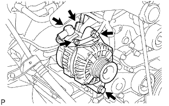
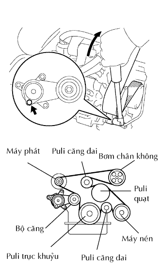
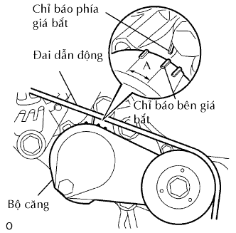
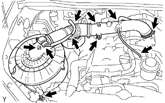

MÁY PHÁT > LẮP |
| 1. LẮP CỤM MÁY PHÁT |
|  |
Lắp máy máy phát bằng 2 bu lông.
Lắp dây điện máy phát bằng bulông và đai ốc.
Lắp nắp cực.
Lắp giắc nối.
| 2. LẮP ĐAI DẪN ĐỘNG |
|  |
Lắp dây đai dẫn động vào các puli trừ puli bộ căng đai.
Dùng một chi tiết có hình lục giác được chỉ ra bởi mũi tên trên hình minh hoạ để dịch chuyển puli bộ căng đai xuống và sau đó lắp đai dẫn động lên puli căng đai.
|  |
Sau khi đã lắp một dây đai mới, hãy kiểm tra rằng dấu chỉ báo của bộ căng đai nằm trong vùng A như trong hình vẽ.
| 3. LẮP CÚT NỐI NẠP KHÍ VÀ BỘ LỌC GIÓ |
|  |
Lắp bộ lọc gió và cụm ống nối nạp khí bằng 4 bu lông và xiết chặt kẹp ống.
Nối giắc của cảm biến MAF và các kẹp dây điện.
Lắp ống thông hơi số 2.
Lắp ống chân không.
| 4. NỐI CÁP VÀO CỰC ÂM ẮC QUY |
| 5. TIẾN HÀNH THIẾT LẬP BAN ĐẦU |
Tiến hành thiết lập ban đầu (Xem trang Kích chuột vào đây).